Hutong After Rain
雨后胡同
An environment study of a short stretch of a Beijing residential hutong at night, about twenty minutes after the rain has stopped. Its warm light comes from a paper lantern, a doorway bulb and a sodium street lamp, set against a cool city sky and soaked stone.
I locked five cameras at the greybox stage, so every milestone is a true before and after. The lane is two runs of alley with one bend, 4 to 6 m wide between walls 2.8 to 3.5 m high, dressed with bikes, bins, cables, laundry, meter boxes and invented Chinese couplets and notices. I built the paper lantern, the shop’s drinks fridge, the carved stone piers and the lane surface itself, with its crown, gutters and potholes, in Unreal with Geometry Script.
- locked cameras
- 5
- realism passes
- 3
- in real time on an RTX 4080
- 72 fps
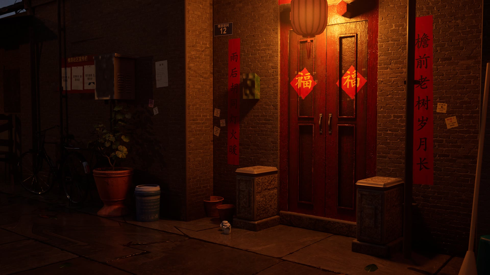
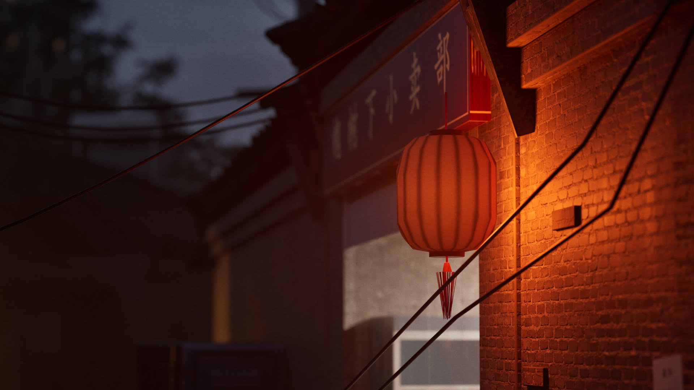
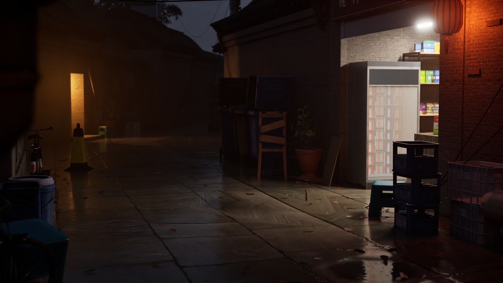
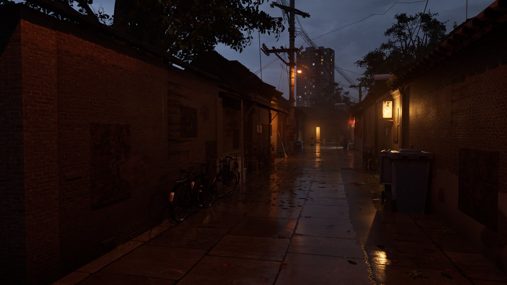
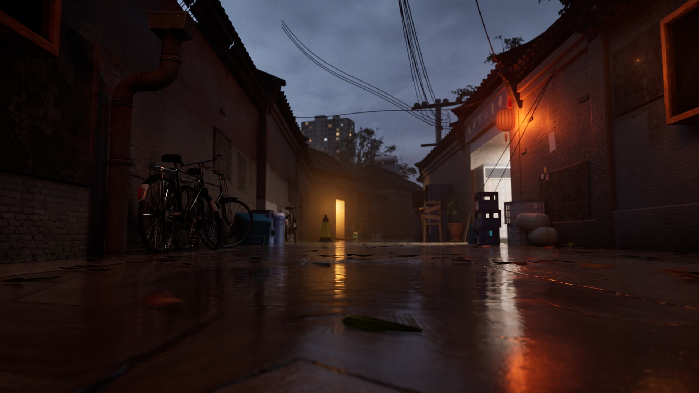
Five fixed cameras with real lenses, from a 24 mm establishing shot to an 85 mm close-up of the lantern, the puddle shot taken with the lens 15 cm above the lane. The finals are path traced at 3840 × 2160 with 256 samples per pixel; switch to see the same frames rendered in real time with Lumen.
Twenty seconds down the lane to the bend, 493 frames at 24 fps, path traced at 3840 × 2160 with the same lighting and materials as the stills.
How it’s built
- Cameras locked at greybox
- Five CineCameras with real lens settings, 24 to 85 mm on a full-frame sensor at f/1.8 to f/4, with manual exposure, were locked before any material existed, so every later capture compares directly with the ones before it.
- One master surface
- Brick, stone, wood and roof tiles run through one box-projected master material with a shared wetness function and per-instance history: color drift, grime bands, streaks, cracks and chipped edges over Poly Haven scans.
- Puddles that sit in the ground
- The lane is real geometry with a crown, gutters, dips and potholes, so water collects in basins instead of being painted on a flat floor. The water is level, silt-dark at water’s real reflectance, with fine wind ripples and dust.
- Light in physical units
- Sodium and LED practicals are set in lumens with IES profiles from real fixtures. The sky in frame is the same graded dome the sky light captures, so it is the sky lighting the scene, and two fog layers add ground mist and haze.
- A lantern built for its close-up
- The paper lantern was rebuilt for the 85 mm shot: a smooth profile, paper that sags between the bamboo ribs, a hot spot where the bulb sits, and a silk tassel.
- Checked against photographs
- Three realism passes compared the frames with photographs of Beijing hutongs after rain and fixed whatever read as rendered. Every milestone was also rendered in both Lumen and the Path Tracer, so the two could be compared side by side.
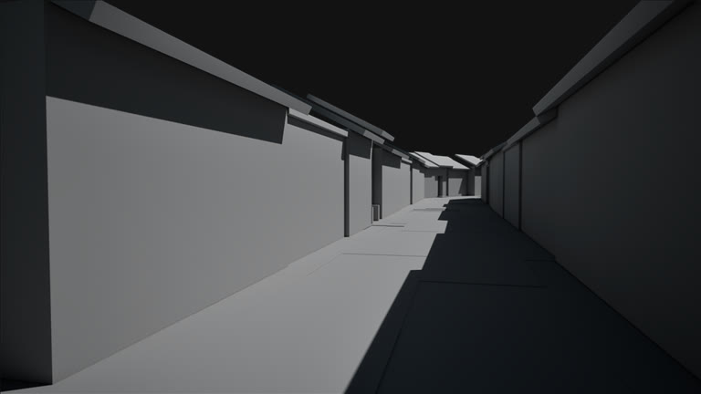
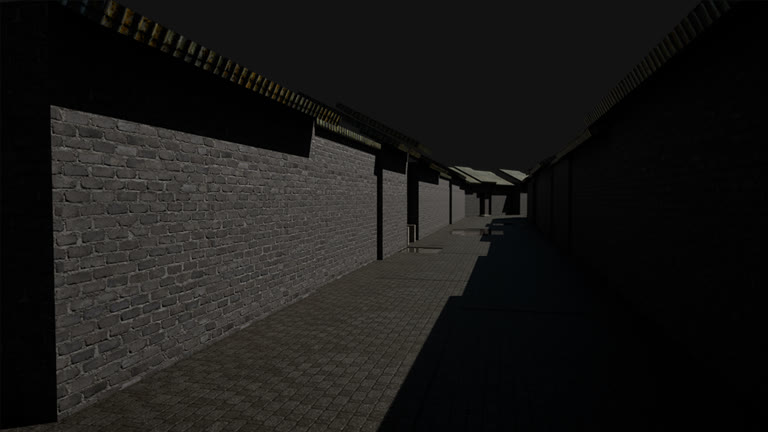
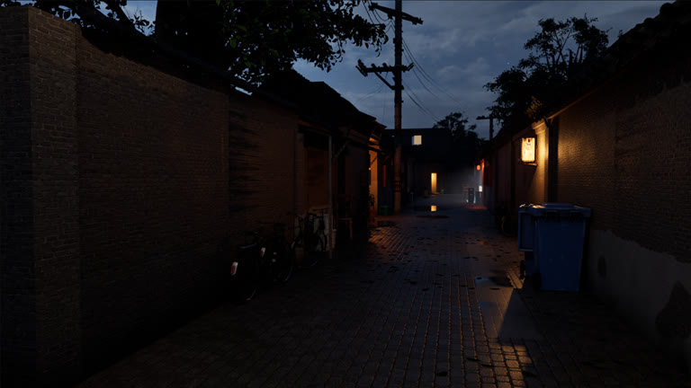
The alley entrance camera at four milestones, each one a true before and after because the camera never moved. The final frame is path traced.
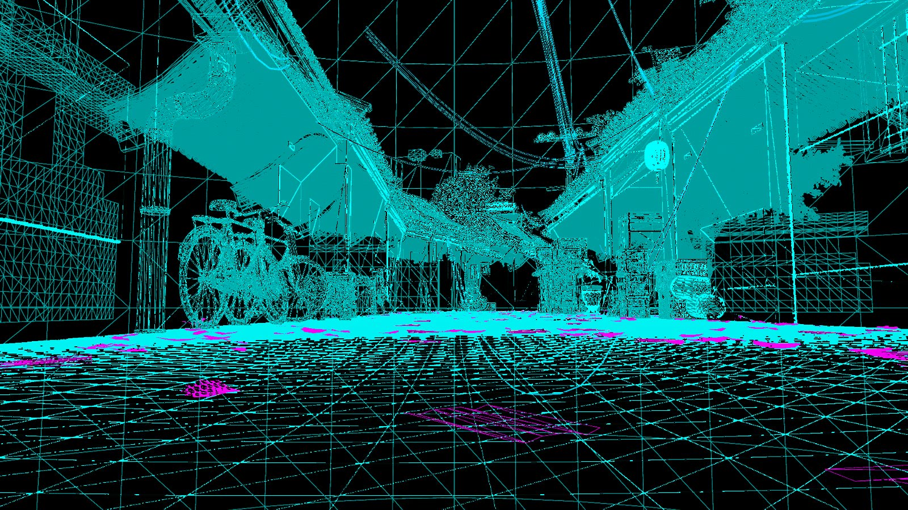
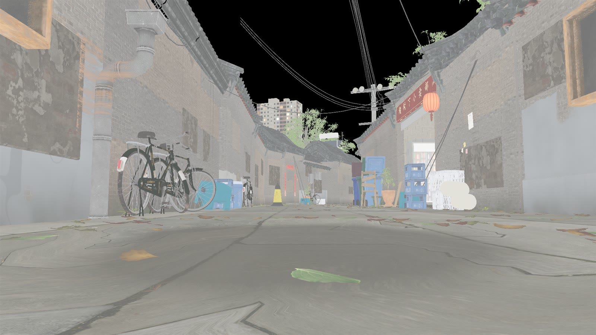
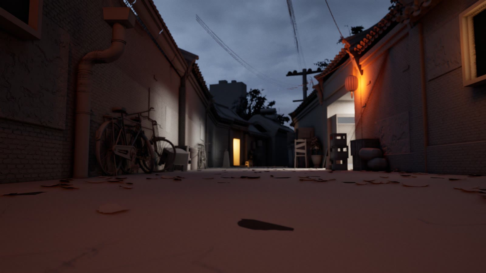
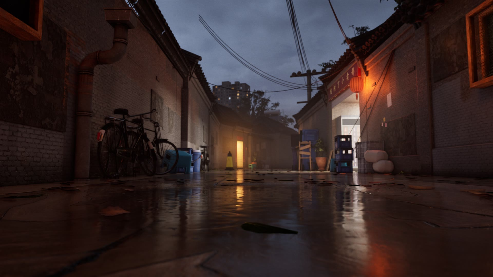
The puddle reflection taken apart: wireframe, unlit base color, lighting only, real time with Lumen, and path traced.
Credits
- Attribution, CC-BY 4.0
- Supermarket Drinks Shelf by Rendevr on Sketchfab, geometry only; the can labels were replaced with invented, brand-free artwork.
- Fab
- Hutong / Chinese Alleyway Pack by Natural Grow, Tile Eaves by PBRMAX, 50 Realistic Leak Decals Vol. 03 by DilaraTok, and Megascans plaster, moss and curbside weeds.
- CC0, Poly Haven
- Brick Wall 08, Large Grey Tiles, Brick Pavement 02, Rock Tile Floor, Wood Peeling Paint Weathered, Grey Roof Tiles, Cracked Concrete, Steel Frame Shelves 01, Planter Pot Clay, Potted Plant 01, Rollershutter Door, and the Kloppenheim 07 Pure Sky HDRI.
- Light data
- IES profiles from Signify.
- Built in the project
- The paper lantern, drinks fridge, shop stock and labels, couplets, notices, door plates, shop sign, carved stone piers, lane surface, wall history, leaf litter and the background tower block, all made in the project.
No real brands, logos or trademarks appear in the scene; all signage and labels are invented.